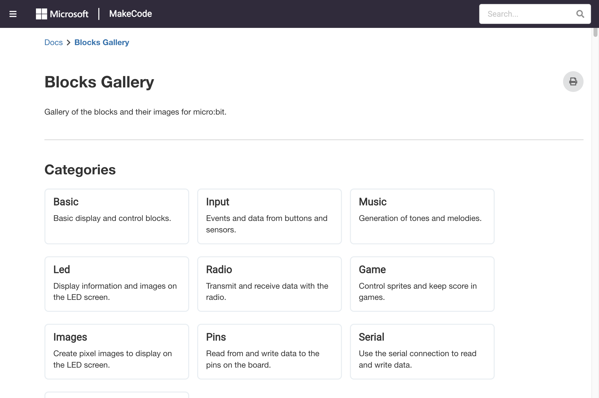

積木分類、拖曳連接、展開收合、搜尋功能
MakeCode 的積木依照功能分為多個類別，每個類別以不同顏色區分：
| 顏色 | 分類 | 主要功能 |
|---|---|---|
| 🔵 藍色 | Basic | 顯示數字/文字、LED 控制、暫停、重複執行 |
| 🟣 紫色 | Input | 按鈕、晃動、感測器輸入 |
| 🟤 棕色 | Music | 音符、節奏、旋律播放 |
| 🟣 深紫 | LED | 個別 LED 點亮、亮度控制 |
| 🟢 綠色 | Radio | 無線電收發訊息 |
| 🔴 紅色 | Game | 遊戲精靈、碰撞偵測、計分 |
| 🔴 橘紅 | Images | 建立與顯示自訂圖案 |
| 🔵 深藍 | Pins | 硬體腳位、類比/數位訊號 |
| 🟠 橘色 | Variables | 變數、運算式 |
| 🔵 灰藍 | Loops | 重複、迴圈控制 |
| 🔵 灰藍 | Logic | 條件判斷、布林運算 |
| 🟠 深橘 | Functions | 自訂函式 |
| 🟢 淺綠 | Arrays | 陣列操作 |

積木分類總覽
每個積木都有特定的形狀，代表它的用途：
| 形狀 | 名稱 | 說明 | 範例 |
|---|---|---|---|
| 方塊狀 | 語句積木 | 執行一個動作，可上下堆疊 | show number、show icon |
| 圓角凹槽 | 數值積木 | 代表一個數值，放入語句積木的凹槽中 | 0、100 |
| 六角形 | 布林積木 | 回傳 true 或 false，放入條件判斷中 | button A is pressed |
| 有缺口的方塊 | 容器積木 | 可包裹其他積木（如迴圈、條件） | forever、if |
| 帶箭頭的方塊 | 頂部積木 | 放在最頂部，不會連接上方積木 | on start、forever |
show string 展開後可設定滾動速度點擊積木區上方的🔍 搜尋列，輸入關鍵字即可快速找到積木：
| 搜尋技巧 | 範例 |
|---|---|
| 輸入積木名稱 | show number、temperature |
| 輸入中文名稱 | 溫度、顯示數字 |
| 輸入功能描述 | button、LED |
| 分類 | 積木 | 參數 | 說明 |
|---|---|---|---|
| Basic | show number | value (number), duration (ms) | 在 LED 上顯示數字 |
| Basic | show string | value (string), duration (ms) | 滾動顯示文字 |
| Basic | show icon | icon (IconNames) | 顯示內建圖案 |
| Basic | show leds | x (0-4), y (0-4), on (boolean) | 自訂 5×5 LED 圖案 |
| Basic | forever | — | 重複執行區塊內的積木 |
| Basic | pause | ms (number) | 暫停指定毫秒數 |
| Input | on button pressed | button (A/B/Any) | 按鈕事件處理 |
| Input | on shake | — | 晃動事件處理 |
| Input | temperature | — | 讀取溫度 (°C) |
| Input | light level | — | 讀取光線強度 (0-255) |
| Music | play tone | frequency (Hz), duration (ms) | 播放單一音符 |
| Music | music ring | — | 播放音樂鈴聲 |